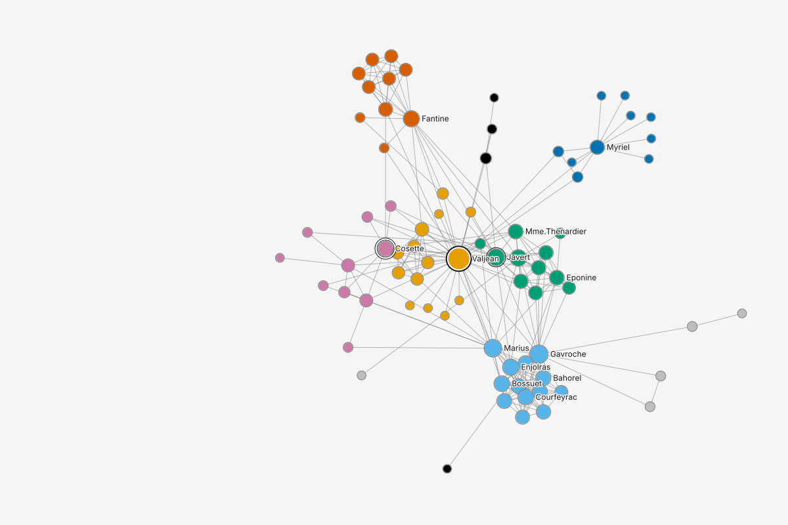
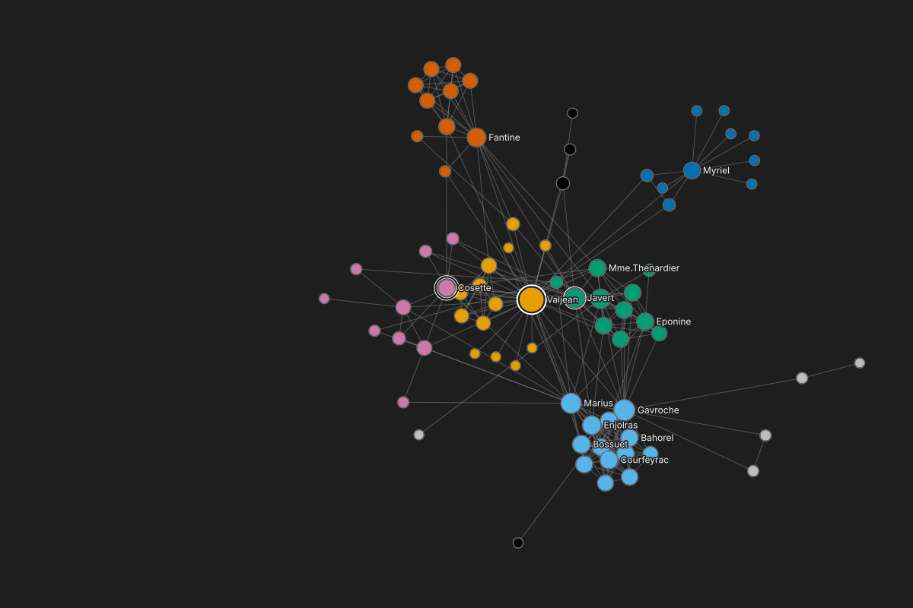

Javert
group 4, degree 17
group 4, degree 17
Group color group
214
813
411
110
6 more
NodesEdges
Full graph: 77 nodes. Sorted by degree.
| label | group 10 values | degree 1 to 36 | betweenness 0 to 0.57 |
|---|---|---|---|
| Valjean | 2 | 36 | 0.570 |
| Gavroche | 8 | 22 | 0.165 |
| Marius | 8 | 19 | 0.132 |
| Javert | 4 | 17 | 0.0543 |
| Thenardier | 4 | 16 | 0.0749 |
| Fantine | 3 | 15 | 0.130 |
| Enjolras | 8 | 15 | 0.0426 |